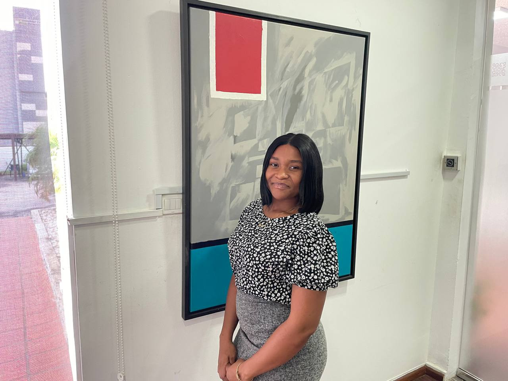

Hello,
I'm Asley Odonkor.
-I'm a student Of UG; offering Bsc Computer Science.
I’m a motivated learner with a growing interest in technology and design.
I enjoy solving problems, experimenting with new ideas, and turning concepts into real, functional projects.

Who Am I?
SCHOOLS
- Labone SDA School.
- Holy Child SHS.
- University Of Ghana, Legon.
ACHIEVEMENTS
- Best Student in Science
- Indulged in several group projects
- Improved my skills in languages like HTML, CSS, and JavaScript.
EXPERIENCES
- Internship at Aguilla Holdings
- Photographer–Ghana Police Church
- Computer Science Association (COMPSSA)
HOBBIES
- Reading Tech Blogs
- Coding Personal Projects
- Exploring New Web Technologies